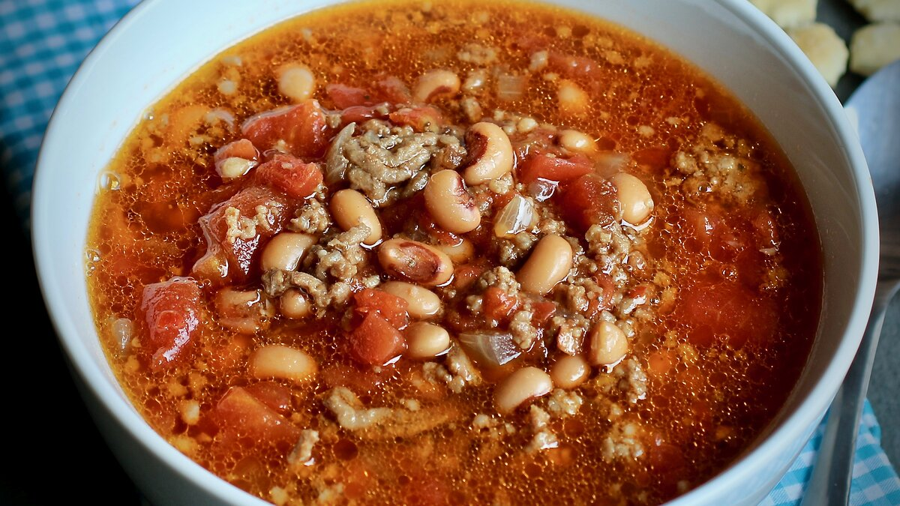

Black-Eyed Pea Soup

Description
This is a great New Year's meal! Perfect on a cold winter night. Great comfort food. Serve with corn bread.
Ingredients
1 lbs bulk pork sausage
1 lbs ground beef
1 large onion, diced
4 cups of water
3 cans black-eyed peas, drained
1 can diced tomatoes
1 can diced tomatoes with green chilli/chile ? pepper
1 teaspoon Worcestershire sauce
0.75 teaspoon garlic salt
0.5 teaspoon salt
1 can chopped green chillies
4 beef bouillon cubes
0.25 teaspoon ground black pepper
0.25 teaspoon ground cumin
Steps
- In a large Dutch oven, cook and stir the pork sausage and ground beef with the onion over medium heat until the meat is no longer pink, 10 to 12 minutes; drain off excess fat.
- Pour in the water, and stir in black-eyed peas, diced tomatoes, tomatoes with green chiles, Worcestershire sauce, garlic salt, salt, canned green chilies, molasses, beef bouillon cubes, black pepper, and cumin until thoroughly mixed.
- Bring the soup to a boil, reduce heat to a simmer, cover, and simmer for 45 minutes.
Source: All Recipies